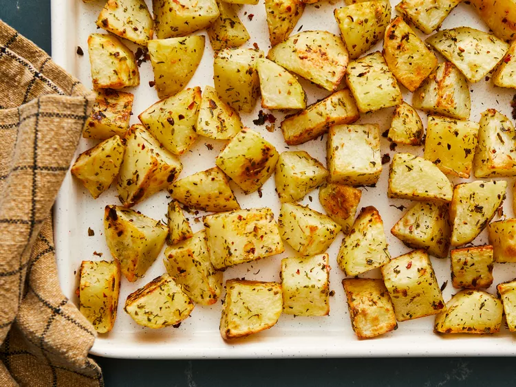
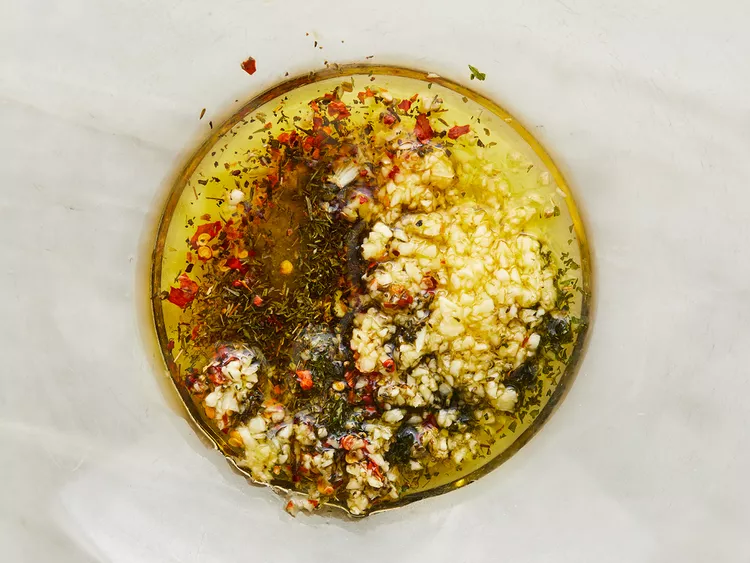
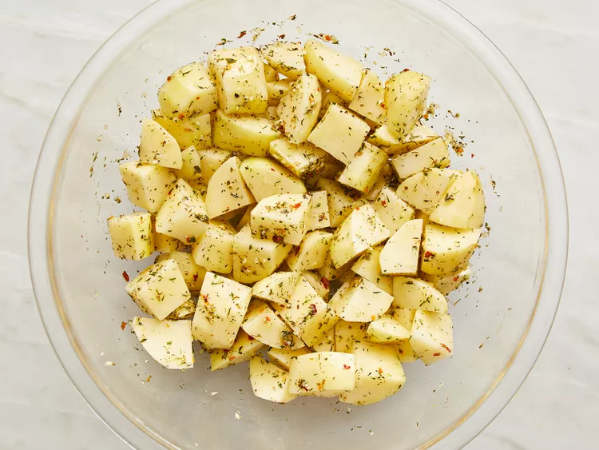
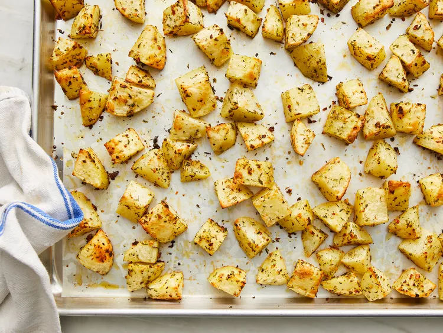

Oven Roasted Potato

An oven roasted potato is a potato that has been cooked in an oven until it is crispy on the outside and soft on the inside. The potato is typically cut into wedges or cubes and seasoned with herbs, spices, and oil before being roasted at a high temperature. The result is a delicious and savory side dish that can be enjoyed on its own or paired with a variety of other foods.
Ingredients
- 1 tablespoon minced garlic
- ½ teaspoon dried basil
- ½ teaspoon dried marjoram
- ½ teaspoon dried dill weed
- ½ teaspoon dried thyme
- ½ teaspoon dried oregano
- ½ teaspoon dried parsley
- ½ teaspoon crushed red pepper flakes
- ½ teaspoon salt
- 4 large potatoes, peeled and cubed
Directions
- Preheat the oven to 475 degrees F (245 degrees C).
- Combine oil, garlic, basil, marjoram, dill, thyme, oregano, parsley, pepper flakes, and salt in a large bowl.

- Stir in potatoes until evenly coated. Place potatoes in a single layer on a roasting pan or baking sheet.

- Roast in the preheated oven, turning occasionally to brown on all sides, until tender, about 20 to 30 minutes.

- Serve it !